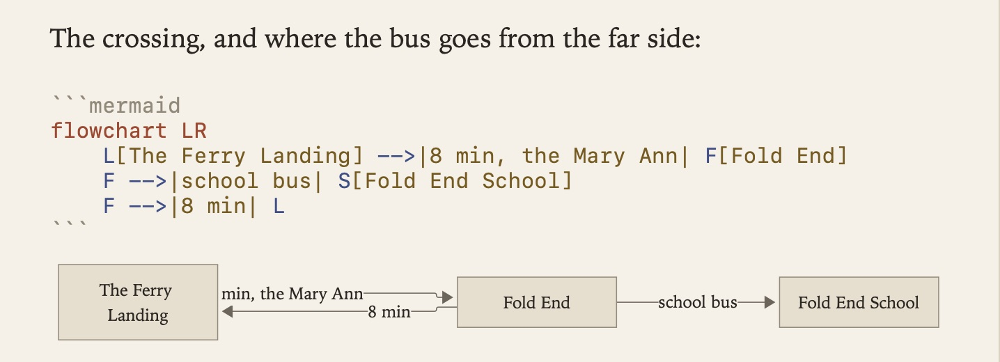

Pictures and Tables
Pictures and tables are written in ordinary Markdown, and Grasmere draws them on the page so you can see how they’ll look.
Pictures
Put a picture link on a line of its own and the picture appears beneath it.

The Markdown stays on the line above, so you can still change the caption and the address.
Adding a picture
- Paste a screenshot or a copied image, or drop an image file onto a document. Grasmere saves it in the project’s
mediafolder and links it where you were typing. - Drop a video on the same way. It’s linked like a picture, and plays on a website you build from the project.
- Drag a picture from the contents into a document to link to it.
- Link to a picture on the web with
. Grasmere downloads it to show it.
Working with pictures
- Right-click a picture for Copy Image and Show in Finder.
- Rest the pointer on a link to a picture to see a preview.
- Rename a picture in the contents and the links to it follow, as they do for a document.
Settings
- Settings ▸ General ▸ Save in these folders ▸ Pictures and videos chooses where pasted and dropped pictures and videos go. It’s
mediaunless your project already has animagesfolder. - Settings ▸ General ▸ Show images from the web can be turned off. Downloading a picture lets its website know you opened the document.
- Settings ▸ Appearance ▸ Show images in the contents lists pictures alongside your documents.
Tables
A table looks like a table until you click into it. Then you’re editing the Markdown, and when you click away it’s drawn again.

| Crop | Sow | Harvest |
|:---|:---:|:---:|
| Garlic | October | July |
- Format ▸ Insert Table (⌥⌘T) starts a new one.
- Tab and ⇧Tab move between cells, lining the columns up as they go.
- The colons in the second line set whether each column lines up left, centre or right.
Diagrams
New in 1.3.
To draw a diagram, describe it in Mermaid’s notation inside a code block marked mermaid. Grasmere draws it beneath the block.
```mermaid
flowchart LR
L[The landing] -->|8 min| F[Fold End]
F -->|bus| S[School]
```
The text stays on the page for you to edit, and the drawing catches up a moment after you stop typing. While a change is half-made, you keep the last drawing that worked. If Mermaid can’t read the block, a quiet line under it says why. Click a drawing to put the cursor in its block.
Diagrams take the theme’s colours and type. They go into PDFs, Word documents and websites you build, and on a website they follow its light and dark colours. Everything is drawn on your Mac and nothing is sent anywhere. On GitHub the same block shows as a diagram. Other Markdown editors show it as code.

Related
- Writing and Formatting
- Quick Capture and Sharing, for saving pictures and PDFs from the web